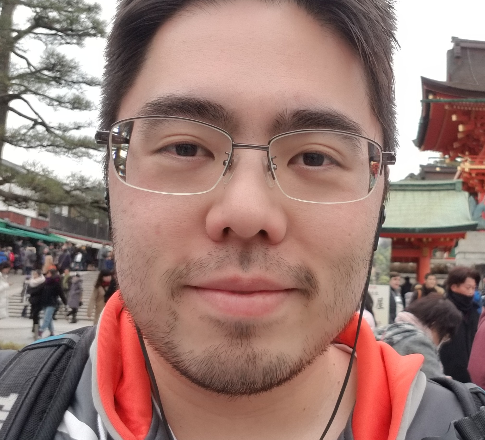

Tiago Minoru Yoneda

Nascido em São Paulo, 33 anos. Moro ainda em São Paulo, nas proximidades da USP. Atualmente estudante de desenvolvimento Web Full Stack na Trybe.
Habilidades
- Bastante proficiente em Matemática
- Fluente em Inglês
- Conversasão básica em Japonês
- Gosto bastante de programação
View my Linkedin Profile
View my Github Profile